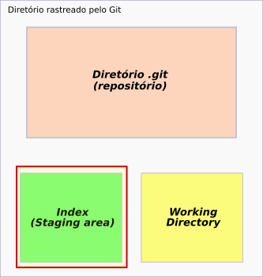

Atenção!
Esse comando é recomendado apenas para uso em arquivos locais, ou seja, para os arquivos que estão somente na sua máquina e não em um repositório remoto.
Modo de usar o reset: padrão ou mixed
Esse comando pode ser usado para retirar arquivos do index (a "sala de espera" do git).

Lembrando que os arquivos que estão no index são aqueles em que foram usados o comando git add, mas que ainda não receberam um commit.
Clique aqui, caso precise saber mais sobre o comando add do Git.
Sendo assim, usamos:
$ git reset <nome_do_arquivo>
- $ indica que você deve usar o usuário comum para fazer essa operação.
- digite o nome do arquivo sem os sinais < >.
que tem o mesmo valor do comando
$ git reset --mixed <nome_do_arquivo>
Quando não é especificado o modo, o Git usarão o padrão, que é o mixed.
Exemplo:
Vamos supor que eu tenho, no meu projeto, um arquivo já rastreado pelo Git, mas que foi modificado.
E acabei mandando-o para o index

Entretanto, não era para esse arquivo estar no index pois ainda preciso fazer outras alterações nele.
Sendo assim, para retirá-lo, uso o comando
$ git reset comite_etica_inline.html